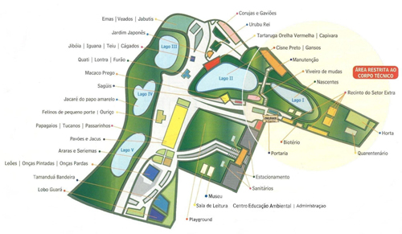

Conheça algumas das espécies:

Tamanduá-bandeira (Myrmecophaga tridactyla)

Onça pintada (Panthera onca)
Arara vermelha (Ara chloroptera)

Lobo guará (Chrysocyon brachyurus)

Mutum do sudeste (Crax blumenbachii)
- Espécie endêmica da Mata Atlântica de baixada, passa a maior parte do tempo no solo
- Se alimenta de frutos e sementes, e se empoleira para dormir e nidificar
- Atualmente é encontrado apenas em 11 localidades em Minas Gerais, Espírito Santo e Bahia, habitando matas primárias ou em avançada regeneração
- São sensíveis à caça, alteração e fragmentação de seu habitat
Mapa do zoo:
Quer saber mais sobre os animais e sobre o zoo? aguardamos ansiosamente sua visita

Como chegar no Zoológio de Guarulhos
Endereço: Rua Dona Gloria Pagnoncelli 344 Jardim Rosa de França – Guarulhos – São Paulo – Brasil CEP: 07081-120
Como chegar no Zoológio de Guarulhos
Endereço: Rua Dona Gloria Pagnoncelli 344 Jardim Rosa de França – Guarulhos – São Paulo – Brasil CEP: 07081-120